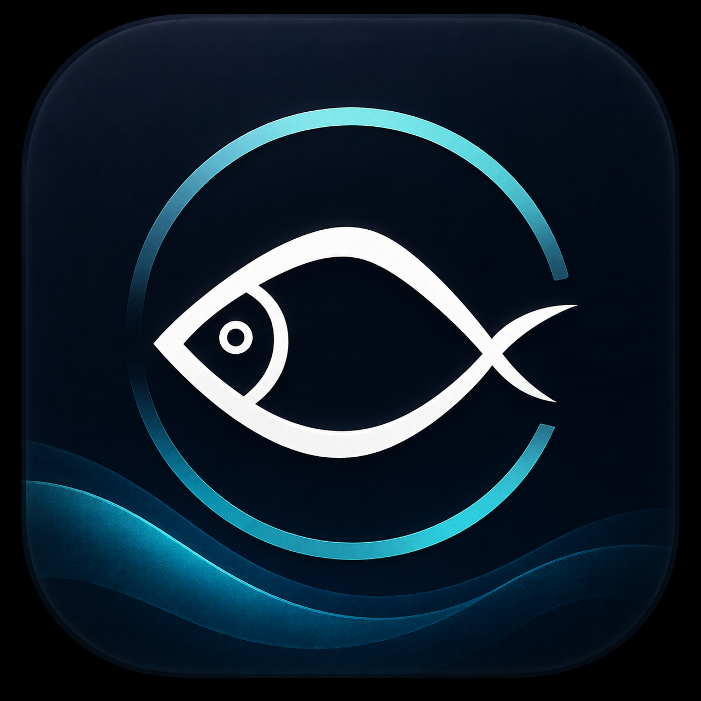

Iniciando servidor local
Preparando carta, pedidos, cocina y caja…
Basado en RestoApp del Ingeniero en Sistemas e Informática Max Alessandro García López.
Preparando carta, pedidos, cocina y caja…
Basado en RestoApp del Ingeniero en Sistemas e Informática Max Alessandro García López.